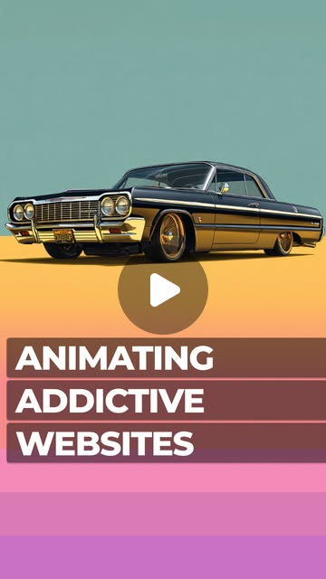
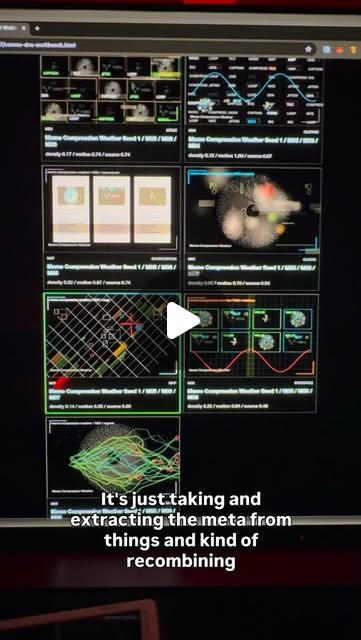
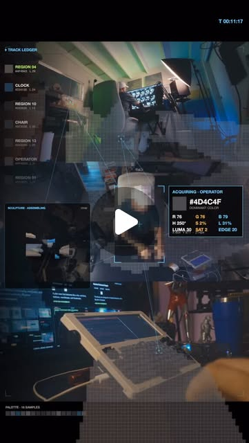
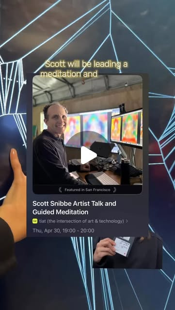
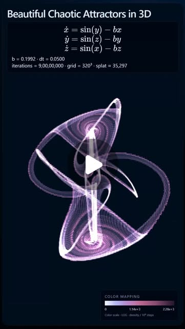
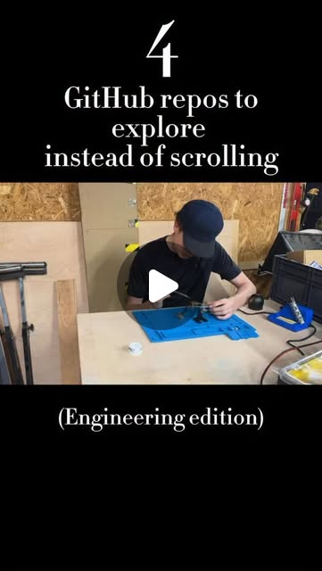
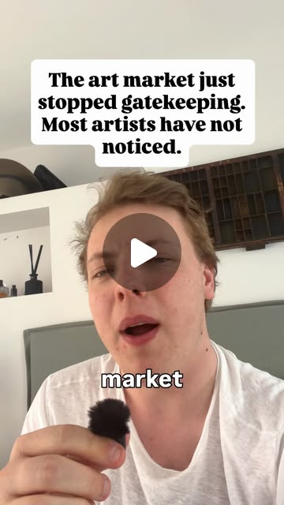
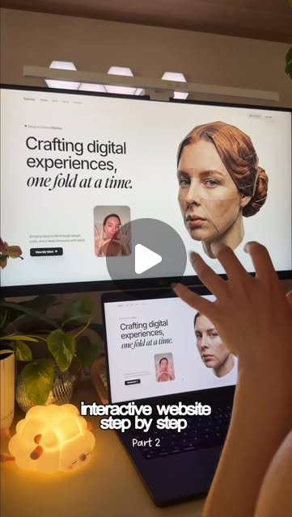
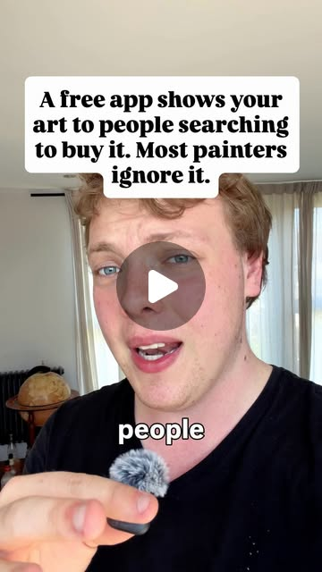
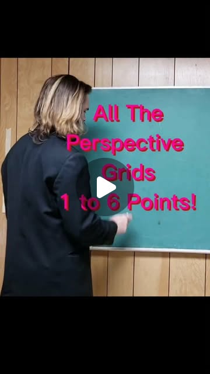

workflow_multiplier
The One-Person Studio: Creative Tech Stack That Replaces a Team
In 2026, a single creator with Claude Code, Cursor, Blender, and a handful of AI tools can produce work that required a 5-10 person team two years ago: interactive 3D websites, motion-captured animations, AI-assisted VFX, generative music videos. These entries collectively map the full stack.
Blender · Claude · Cursor · Gemini · Hugging Face · Kling · MediaPipe · Pika · React · Runway · Sora · TouchDesigner · Unity · Unreal Engine · Veo
Try It — Action Sketch
1. Concept: Claude Code for rapid prototyping + ideation 2. 3D: Blender + motion capture via MediaPipe (500+ landmarks/frame) 3. Video: AI generation via Veo/Kling/Pika for b-roll and effects 4. Interactive: React/Three.js for browser-based 3D experiences 5. Music: AI-assisted composition + Audacity for post-production 6. Ship: Cursor for polishing the final interactive site 7. Distribution: Direct-to-audience, no gatekeepers needed
Prerequisites: Intermediate coding ability (or willingness to use Claude Code), Blender basics, One AI video tool (Veo, Kling, or Pika), Web fundamentals (HTML/CSS/JS)
Connected Posts (23)
Ben Affleck just proved he’s more than an A-lister—he’s an AI visionary — I think he just ripped a massive line backs...
Ben Affleck just proved he’s more than an A-lister—he’s an AI visionary. From predicting the end of high-cost VFX to ... — @encycloped_ai.

MediaPipe — What if Spiders Wove with Strings?🕷️
🧱 2026/04/09 — @pepepepebrick; uses MediaPipe, TouchDesigner.

Cursor — Most websites just show text.
“This isn’t text… this is physics.” — @code.akshat.in; uses Cursor, React.

Claude — Also, happy 100 posts to me! Woohoo!!!
“Claude can do this in 10 minutes!” Is a caption I see a LOT rn and I definitely have mixed feelings about it. On one... — @ojrgb; uses Claude, MediaPipe, TouchDesigner.

Claude — Here's how to build it in 10 minutes:
This is the exact scroll effect Apple uses on their product pages! — @theaisurfer; uses Claude, Cursor, Veo; demonstrates code generation.

React — made a little 3D racer that runs right in the browser. anti-grav...
cool way to build complex 3D creative stuff on the web with AI agent workflows. you build yourself a library first, t... — @rndyrbrts; uses React; demonstrates AI agents, code generation.
Blender — • 500+ body, hand & face landmarks per frame
FreeMoCap turns ordinary webcams into professional markerless 3D motion capture. — @marc.kaz; uses Blender, Unity, Unreal Engine; demonstrates motion capture.

MediaPipe — Download free at
Torin & Lyell demo Classifier & PCA visualization TOXs live at DATLAB XIII 12/2025. TouchDesigner plugins for trainin... — @zerospacelabs; uses MediaPipe, TouchDesigner.

Built a system that turns taste into data and data back into — Started with a moodboard of references I’d been collec...
Built a system that turns taste into data and data back into art. — @rndyrbrts.

Gemini — if you want to listen leave a comment and i can send a link! ♡
testing my new mic by talking about the presentation i had at @datlabnyc about the relationship i see between math eq... — @as.ws__; uses Gemini, Kling, Pika.

Let me know if you want this skill — This is a 90-second walkthrough of how to turn your taste into a...
Let me know if you want this skill.. — @rndyrbrts; demonstrates AI agents, prompt engineering.

MediaPipe — Ongoing R&D at the intersection of art and technology. not a finished...
repost @gerrylistudio How does presence reshape what we remember? — @touchdesigner; uses MediaPipe, TouchDesigner.

Join us at tiat on Thursday, April 30th — Tracing a path from his pioneering interactive media works to new...
Join us at tiat on Thursday, April 30th! ⭐️ We’re honored to have Scott Snibbe @ssnibbe share an artist’s talk explor... — @Edited.
Wild times we are living in — Hehe... 😂 i love this. I legit thought of this the other day. Im...
Wild times we are living in. — @lostandlucky.

Claude — Rendered via 3D Gaussian splatting.
A gorgeous strange attractor known as Thomas' cyclically symmetric attractor — @kaustav.py; uses Claude; demonstrates AI agents, MCP.
The art market just stopped gatekeeping, and most artists ha — For decades you made the work and waited to be picked....
The art market just stopped gatekeeping, and most artists have not noticed. — @creativeflairhq.

Join us at tiat on Thursday, April 30th — Tracing a path from his pioneering interactive media works to new...
Join us at tiat on Thursday, April 30th! ⭐️ We’re honored to have Scott Snibbe @ssnibbe share an artist’s talk explor... — @Edited.

A gorgeous strange attractor known as Thomas' cyclically sym — Rendered via 3D Gaussian splatting.
A gorgeous strange attractor known as Thomas' cyclically symmetric attractor — @kaustav.py.

Hugging Face — ️ FREECAD — github.com/FreeCAD/FreeCAD
🔧 4 GitHub repos to explore instead of scrolling ↓↓ — @jg.engineers; uses Hugging Face.

The art market just stopped gatekeeping, and most artists ha — For decades you made the work and waited to be picked....
The art market just stopped gatekeeping, and most artists have not noticed. — @creativeflairhq.

Website with hand-tracking interaction, step by step tutoria — visuals created in part 1 using gpt2 model for images ...
Website with hand-tracking interaction, step by step tutorial [part 2] ✨ — @marina_uiux.

There is a free app putting artists work in front of people — Instagram shows your work to people who already follow...
There is a free app putting artists work in front of people searching for art to buy, and most painters ignore it. It... — @creativeflairhq.

All The Perspective Grids 1 to 6 Points — Perspective drawing creates depth in your art!
All The Perspective Grids 1 to 6 Points! 👁🙏🔥 — @adamgenesisartuniverse.
Deeper Dive generated 2026-07-07T09:32:38.471026 · Curated by Claude for Gabe (@6ab3) · dejaviewed.com